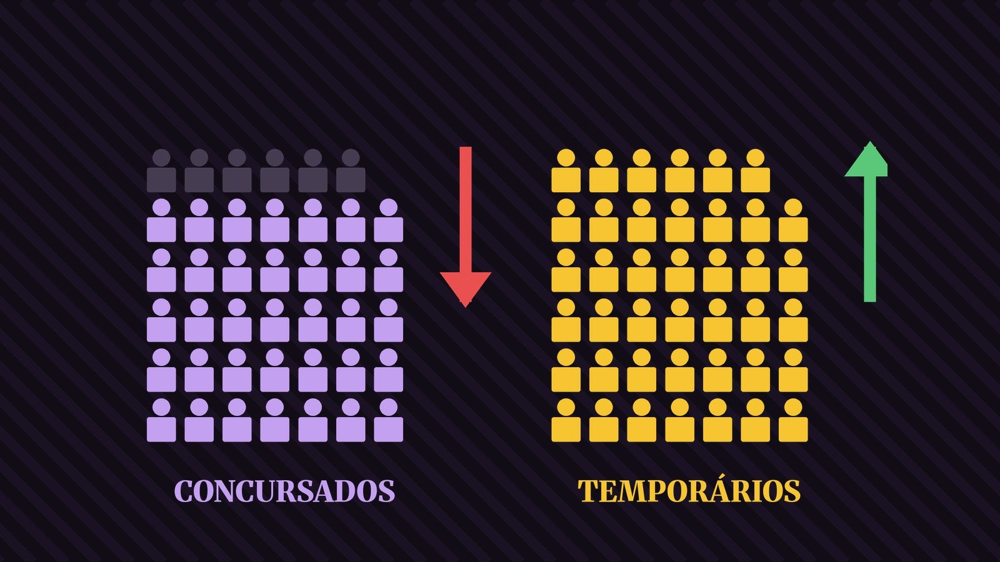

Gravataí · Cidade
Menos concursados, mais temporários e terceirizados: o que mudou no quadro da Prefeitura de Gravataí
Em dois anos, a prefeitura perdeu 196 servidores efetivos e ganhou 223 contratados por emergência. Na saúde, saíram médicos e profissionais de enfermagem concursados, e o gasto com terceirização de pessoal subiu 44%.
Redação
26 DE NOV DE 2026, 19:30
O concurso público é a porta de entrada que a Constituição reservou para o serviço público: entra quem passou na prova, não quem foi escolhido pelo governo. Na Prefeitura de Gravataí, essa porta está ficando mais estreita.
O Sob Vigia comparou a Relação Funcionário x Salário que a própria prefeitura publica no Portal da Transparência em dois momentos: outubro de 2024 e outubro de 2026. Em dois anos, o número de servidores efetivos caiu de 5.061 para 4.865, uma perda de 196 pessoas. No mesmo período, os contratos emergenciais, temporários e sem estabilidade, subiram de 497 para 720, um aumento de 223.
| Vínculo | Out/2024 | Out/2026 | Variação |
|---|---|---|---|
| Servidores efetivos | 5.061 | 4.865 | −196 |
| Contratos emergenciais | 497 | 720 | +223 |
Ter contratos temporários e cargos de confiança é legal. O que preocupa é a direção: menos gente com vínculo estável, mais gente com vínculo provisório.
A saúde perdeu concursados e ganhou terceirizados
A maior perda de concursados aconteceu na saúde. De outubro de 2024 a outubro de 2026, a prefeitura passou a ter 25 médicos efetivos a menos e 47 profissionais de enfermagem efetivos a menos (15 enfermeiros, 19 técnicos e 13 auxiliares de enfermagem).
No mesmo período, cresceu o gasto com terceirização. Nos dados que a prefeitura envia ao Tribunal de Contas do Estado (TCE-RS), a despesa classificada como "outras despesas de pessoal decorrentes de contratos de terceirização" na saúde passou de R$ 6,3 milhões em 2024 para R$ 9,2 milhões em 2025, alta de 44%. É nessa categoria que, pela Lei de Responsabilidade Fiscal (art. 18, § 1º), deve ser registrada a terceirização de mão de obra que substitui servidores.
Quase todo esse valor vai para uma empresa: a Proativa Saúde, cooperativa de trabalho de profissionais da saúde, contratada em 2020. Os pagamentos a ela saltaram de R$ 6,1 milhões em 2024 para R$ 9 milhões em 2025. Segundo os registros de pagamento, a cooperativa fornece profissionais para a atenção básica, o SAMU e a central de ambulâncias.
Os dados não permitem dizer quais vagas de concursados foram ocupadas por terceirizados. Mas o movimento é o mesmo nas duas pontas: menos médicos e profissionais de enfermagem do quadro, mais dinheiro para mão de obra contratada.
Na educação especial, 239 contratados por emergência
O maior salto de temporários está na educação especial. Em 2026, a prefeitura criou o cargo de Agente de Educação Especial Inclusiva, com 400 vagas, para acompanhar alunos com deficiência nas escolas. Em vez de concurso, preencheu as vagas por contrato emergencial: em outubro, eram 239 agentes temporários. Ao anunciar o cargo, a prefeitura disse que os contratos durariam até a conclusão de um concurso público.
A necessidade é real e a ampliação do atendimento é uma boa notícia para as famílias. A pergunta é quando o concurso vai sair: o processo seletivo prevê contratos para 2026, com possibilidade de prorrogação para 2027.
Nos professores, o quadro é diferente. A prefeitura fez concurso em 2025, convocou 158 aprovados em 2026, e o número de professores efetivos cresceu. Ainda assim, a rede seguia com cerca de 400 professores temporários em outubro, um pouco mais que em 2024.
E os indicados?
Em outubro de 2026, a prefeitura tinha 301 cargos em comissão (CCs) ocupados, de 310 previstos no quadro de cargos. Os CCs são de livre nomeação e custaram R$ 1,57 milhão naquele mês.
O Supremo Tribunal Federal já decidiu (Tema 1010) que cargo em comissão só pode existir para funções de direção, chefia e assessoramento, e não para atividades técnicas ou burocráticas, que cabem a concursados. Também decidiu que o número de CCs deve ser proporcional ao de servidores efetivos.
Dois grupos de CCs chamam atenção:
- Assessores jurídicos: a Procuradoria-Geral do Município tem 17 vagas de assessor jurídico em cargo de confiança, ao lado de 19 procuradores concursados. Quase metade da equipe jurídica é de livre nomeação.
- Assessores executivos: são cerca de 100 cargos de confiança de "assessor executivo", com salários entre R$ 2,9 mil e R$ 3,4 mil. A prefeitura precisa explicar que funções de direção, chefia ou assessoramento eles exercem.
O Sob Vigia não afirma que haja irregularidade. Mas a regra do STF existe exatamente para evitar que cargos de confiança façam o trabalho de quem deveria entrar por concurso.
Por que isso importa
O concurso garante impessoalidade: a vaga é de quem tem mérito na prova, não de quem tem padrinho. A estabilidade protege o serviço: um servidor efetivo pode dizer não a uma ordem errada sem medo de perder o emprego. O temporário, o terceirizado e o indicado não têm essa proteção. Quanto mais o serviço público depende deles, mais vulnerável ele fica à pressão política e à troca de governo.
Quem defende o concurso público defende a escola e o posto de saúde que não mudam de equipe a cada contrato.
Leia também
- 965 faltas de água e dois aumentos em seis meses: o saneamento que Gravataí entregou à Aegea
- Chega: servidores de Gravataí aprovam indicativo de greve por tempo indeterminado a partir de 1º de dezembro
- Descolado da realidade: vereador que votou pelo parcelamento do 13º dos professores propõe meritocracia e levar aluno à NASA